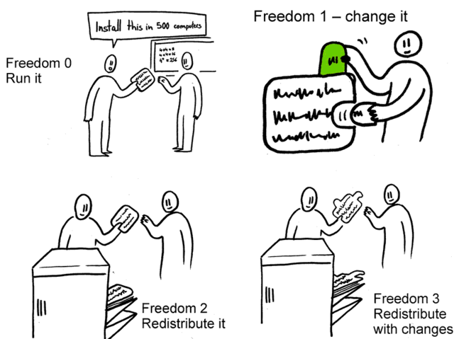
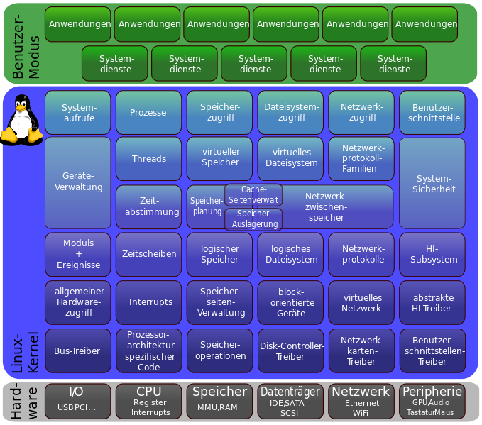
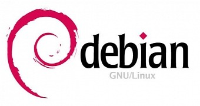
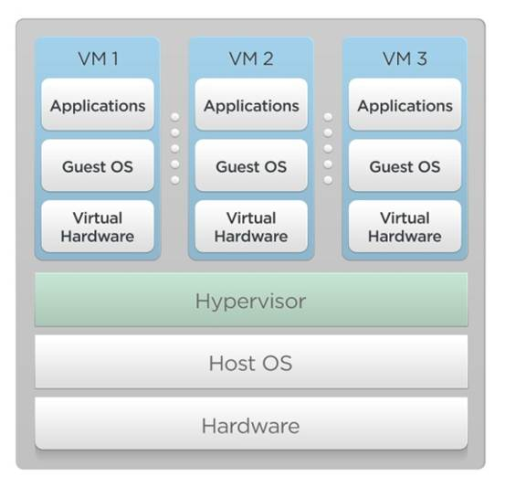

Was ist eigenetlich Linux?
von Niklas Heer23.06.2016
Zu meiner Person
Ich verwende Linux...
- ...seit 10 Jahren privat
- ...seit 6 Jahren auf meinen Servern
- ...seit 4 Jahren als mein Hauptbetriebssystem
- ...seit 3 Jahren auch beruflich
- ...seit 1 Jahr ausschließlich (auch auf der Arbeit)
Wer Fragen zu Linux hat kann gerne auf mich zukommen!
Disclaimer: Die Präsentation kann persönliche Meinungen enthalten.
Gliederung
- Was ist Linux?
- Distributionen
- Fragen
- Demo
Was ist Linux?
Statistiken
| Kategorie | Linux | Unix* | Windows |
|---|---|---|---|
| PCs/Laptops | 2% | 9% | 89% |
| Smartphones | 65% | 24% | 2% |
| > Server (web) | 37% | 30% | 33% |
| Supercomputer | 99% | 1% | - |
| Mainframe | 28% | 72% | - |
| Embedded | 30% | 4% | 12% |
* OSX, iOS, FreeBSD, Solaris, AIX...
Quelle: Wikipedia
Als Linux oder auch GNU/Linux bezeichnet man ein freies unix-ähnliches Betriebssystem, welches auf dem Linux-Kernel und der GNU-Software basiert.
freies Linux
Druch die "GNU General Public License" (GPL) Quelle: https://systemreboot.net/post/what-is-free-software
{kind=link}
unix-ähnliches Linux
Unix wurde 1969 in den Bell Labs entwickelt.
Merkmale:
- Modularität - Trennung von Kernel und Userland
- Unix-Shell - z.B. bash
- Benutzerverwaltung - root, Dateirechte
- "alles ist eine Datei"
Der Linux-Kernel
- 1991 von Linus Torvalds entwickelt
- ist ein monolithischer Kernel
- steht unter der GPL
Quelle: http://www.ubuntubuzz.com/2012/04/linus-torvalds-wins-millennium_20.html
{kind=link}
Aufgaben des Linux-Kernels
Quelle: Wikipedia
{kind=link}
Die GNU-Software
GNU steht für "GNU ist Nicht Unix"- Gründung 1984 von Richard Stallman
- Ziel: Schaffung eines freien Betriebsystem
- 1990 Beginn der Entwicklung des GNU Hurd Kernels
- Der Linux-Kernel "ersetzte" den Hurd-Kernel
Quelle: duckduckgo.com
{kind=link}
GNU-Software im Überblick
- Shell (z.B. bash)
- Coreutils (z.B. ls, cp, mv...)
- Compiler (z.B. GCC - für C)
- Bibliotheken (z.B. glibc - C-Standard-Bibliothek)
- Umsetzung des POSIX-Standards (API Standard aus UNIX)
Distributionen
Was sind Distributionen?
Mit Distributionen oder auch Distros bezeichnet man Komplettpakete aus aufeinander abgestimmter Linux-Software.
Wie viele Distros gibt es?
800 Distros?!
Es gibt aber hauptsächlich 3 Lager.
Unterscheidungsmerkmal: Package Manager.
- .deb-basierte
- .rpm-basierte
- andere
.deb-basierte
Dieses Paketformat wurde 1995 von Debian entwickelt.
Dazu gehören u.a.:
- Debian
- Ubuntu
- Linux Mint

Quelle: softpedia
{kind=link}
.rpm-basierte
Dieses Paketformat wurde 1997 von Redhat entwickelt.
Es ist laut der LSB (Linux Standard Base) der Standard.
Dazu gehören u.a.:
- Mageia/Mandriva
- Fedora/RHEL/CentOS
- openSUSE/SLES/SLED
Quelle: Wikipedia
{kind=link}
Die verschiedenen Paketmanager
# Debian, Ubuntu & Linux Mint
apt-get install bash
# Fedora
dnf install bash
# RHEL/CentOS
yum intall bash
# openSUSE/SLES/SLED
zypper in bash
Fragen?
Quellen
- https://de.wikipedia.org
- http://www.linuxfoundation.org/
- https://www.fsf.org/
- http://www.softpedia.com/
- http://distrowatch.com/
- https://systemreboot.net
- https://www.suse.com/products/
- https://www.redhat.com/en
- über die Jahre angehäuftes Wissen
Demo
One more thing
Es gibt auch Zertifikate für Linux, z.B. vom Linux Professional Institute (LPI)!
- Linux Essentials
- LPIC-1 Linux Server Professional
- LPIC-2 Linux Network Professional
- LPIC-3 Linux Enterprise Professional
Quelle: Wikipedia
Vielen Dank!
Bonus
Docker vs. "Virtual Machines" (VMs)
Docker

Quelle: Wikipedia
#/media/File:Docker-linux-interfaces.svg){kind=link}
Virtual Machine
Quelle: https://www.viux.com
{kind=link}